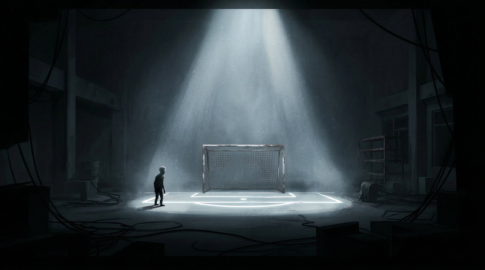
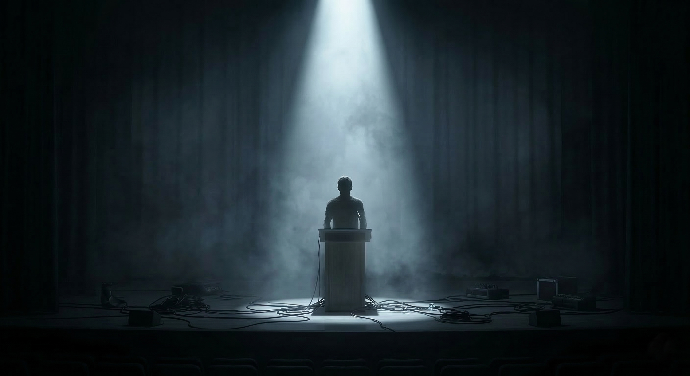

Bölüm 2.5
Bölüm Bazlı Oynanış

Bölüm 1
The Chase
Çocukluk korkusu
Karanlık, bozulmuş bir çocukluk mekânında görünmeyen bir tehdit tarafından takip edilme. Sürekli tetikte olma duygusu.

Bölüm 2
The Match
Başkalarının önünde başarısız olma korkusu
Okul maçındaki kritik an. Baskı arttıkça daralan başarı penceresi ve seyirci önünde hata yapma korkusu.

Bölüm 3
The Stage
Konuşamama, kitlenme, görülme korkusu
Sahne performansı. Nefesi, ritmi ve sesi kontrol altında tutabilmek. Refleks değil kompozisyon.
Bölüm 4
The Unlit Door
Birikmiş iç baskı — güçle küçültülemeyen ağırlık
Saldırı refleksi tersine çevrilir. Her agresif hareket tehdidi büyütür. Çözüm saldırmayı bırakmaktır.
Bölüm 1 — The Chase
Hedef
Oyuncuya ani tehdit altında olma hissini yaşatmak.
Oynanış
- Sağa / sola kaçmak için swipe
- Kısa tepkiler için tap
- Dar zaman pencerelerinde saklanmak için hold
Tehdit, oyuncunun yakınlığına göre ses ve ekran baskısını artırır. Hata yapan oyuncu "ölmek" yerine kısa bir gerilim zirvesi yaşar ve checkpoint'e döner; böylece tempo korunur, frustrasyon artmaz.
The Chase — Bozulmuş çocukluk mekânında kaçış
Bölüm 2 — The Match
Hedef
Sosyal baskının performansı nasıl bozduğunu oynanışa çevirmek.
Oynanış
- Şut gücü için hold
- Yön ve zamanlama için tap
- Baskı yükseldikçe daralan başarı penceresinde karar verme
Oyuncu sakin kaldığında başarı alanı daha okunaklıdır. Baskı arttıkça arayüz daralır, ses yoğunlaşır, çevresel bozulmalar artar. Bu bölümde hata, puan kaybından çok özgüven kaybı hissi üretir.
The Match — Seyircinin baskısı altında kritik an
Bölüm 3 — The Stage
Hedef
Sessizliği aktif bir oynanış deneyimine dönüştürmek.
Oynanış
- Nefes stabilitesi için hold
- Cümle çıkışı ve vurgu anları için timed tap
- Yanlış ritim tuttuğunda sahne baskısı artışı
Hatalar arttıkça yazılar bozulur, ışık sertleşir, seyirci siluetleri daha baskın görünür. Oyuncu panik yaptıkça ritim kaçar; dolayısıyla bölüm refleks değil kompozisyon talep eder.
The Stage — Işık altında yalnız, seyircinin gözünde kaybolmak
Bölüm 4 — The Unlit Door
Hedef
Oyuncunun oyunlardan öğrendiği saldırı refleksini tersine çevirmek.
Oynanış
- Saldırı için tap
- Yeniden konum almak için swipe
- Silahı indirmek, durmak ve gerilimi düşürmek için hold
Oyuncunun her agresif hareketi yaratığın boyutunu, ses yoğunluğunu ve görsel baskısını artırır. İlk bakışta oyun, geleneksel bir boss savaşı başlatıyormuş gibi görünür. Bir noktadan sonra oyuncu çözümün saldırmak değil, saldırmayı bırakmak olduğunu fark eder. Bu fark ediş oyunun kavramsal zirvesidir.
Bazı iç çatışmalar, onlara güç uygulandığında küçülmez; büyür.
Final ve Duygusal Çözülme
Finalde oyuncu sessiz bir odaya uyanır. Tehdit yoktur. Sayaç yoktur. Son saldırı paterni yoktur. Bu alan, oyunun geri kalanına göre bilinçli olarak sakin, yavaş ve güvenlidir. Oyunun finali "büyük zafer" ile değil, "gerçeği anlama" ile kapanır.
Tekrar Oynanabilirlik
- Kısa bölüm yapısı nedeniyle yeniden oynama kolaydır
- Her bölüm bağımsız olarak tekrar deneyimlenebilir
- Bölüm sonlarında kısa performans özetleri veya atmosferik varyasyonlar eklenebilir
- İsteğe bağlı erişilebilirlik seçenekleri (titreşim kapatma, basitleştirilmiş zamanlama vb.)